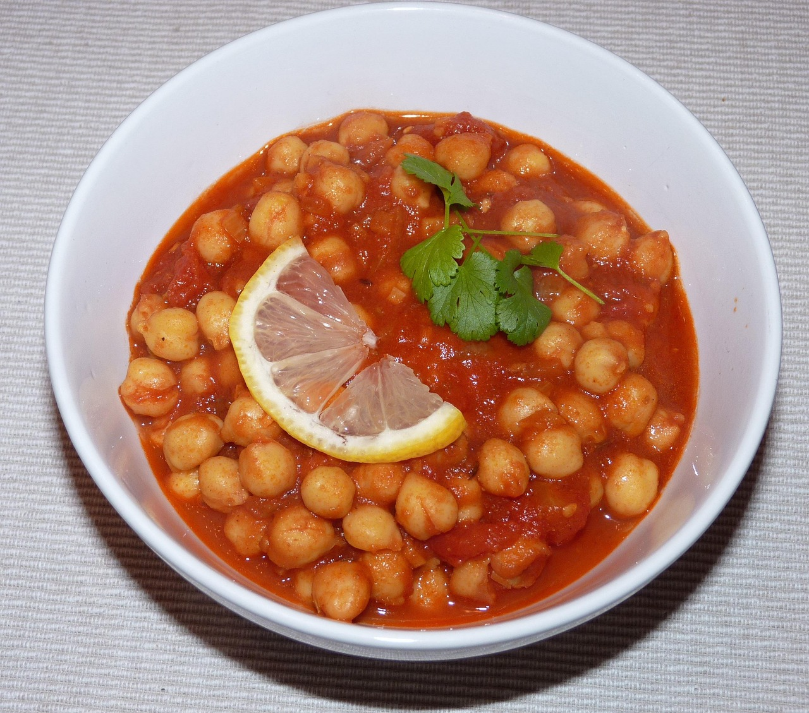
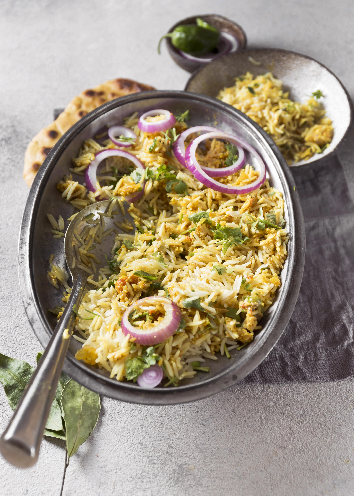

5 Classic Indian Dishes

Chole Masala
Ingredients: Chickpeas, onions, tomatoes, ginger, garlic, coriander, cumin, chole masala powder, lemon, coriander leaves.
Steps:
- Soak chickpeas overnight.
- Pressure cook until soft.
- Sauté onions, ginger, garlic, tomatoes, and spices.
- Add chickpeas, simmer for 10 minutes.
- Garnish with coriander and lemon. Serve hot with bhature or rice.

Paneer Butter Masala
Ingredients: Paneer, tomatoes, onions, butter, cream, mild spices.
Steps:
- Cook onions and tomatoes and blend into a smooth puree.
- Simmer puree with butter, cream, and spices.
- Add paneer cubes and cook until coated.
- Serve hot with naan or steamed rice.

Vegetable Biryani
Ingredients: Basmati rice, mixed vegetables, fried onions, saffron, spices.
Steps:
- Cook rice until 70% done.
- Prepare spiced mixed vegetables.
- Layer rice and vegetables, sprinkle saffron milk.
- Seal and cook on low heat for 15-20 minutes.
- Serve with raita.

Masala Dosa
Ingredients: Rice, lentils, potato, onion, spices, coconut chutney, sambar.
Steps:
- Prepare and ferment dosa batter.
- Cook potato masala with spices.
- Pour batter on a hot tawa, cook until golden and crisp.
- Place potato filling inside and fold.
- Serve with coconut chutney and sambar.

Butter Chicken
Ingredients: Chicken, yogurt, spices, tomatoes, cream, butter.
Steps:
- Marinate chicken in yogurt and spices for 2 hours.
- Cook chicken until slightly charred.
- Prepare tomato-cream-butter sauce and simmer chicken in it.
- Cook until gravy thickens and chicken is tender.
- Serve with naan or jeera rice.